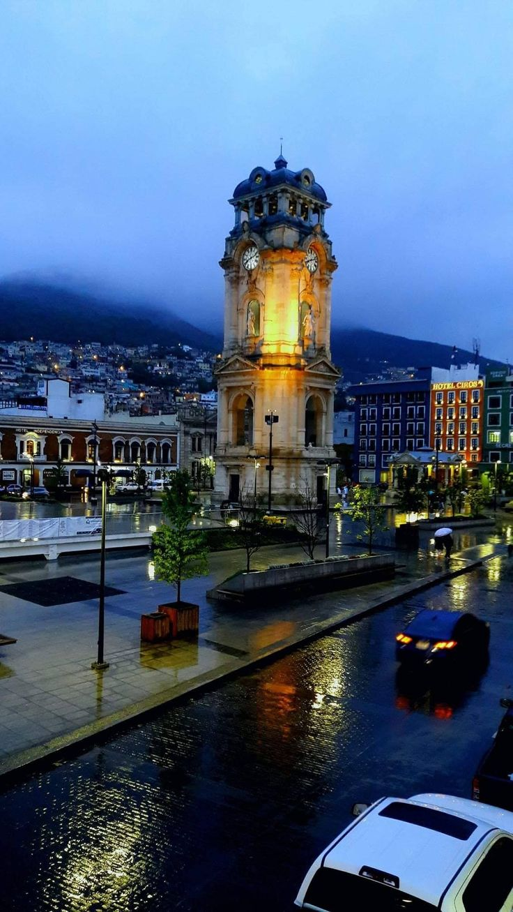

pachuca

pues Pachuca está cañón! es la capital de Hidalgo, queda como a 96 km al norte del DF. le dicen "La Bella Airosa" porque hace un chingo de aire por las sierras de alrededor. es muy conocida por sus minas de plata, los pastes (que son unas empanadas que trajeron los mineros ingleses y están bien ricas), y el Reloj Monumental que está en el centro. también tiene madre en el fut, el Club Pachuca tiene un chorro de títulos y hasta campeón de la Concachampions ha sido. y está re cerca del DF, en camión llegas en menos de 2 horas 🤙
Fue uno de los centros de plata más importantes de toda la colonia. Los españoles explotaron un chingo las minas desde el 1500s. Todavía puedes visitar el Museo de Minería y ver toda esa historia..
El Club Pachuca (los Tuzos) es histórico, fue donde se introdujo el fútbol a México a finales del 1800s, también traído por los ingleses. Su estadio se llama El Huracán.